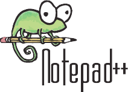

My Time in Computer Science
Things I have done in my Computer Science Class
I have done many things in my computer science class, with many different types of software, including some Hour of Code things, App Inventor, and now, GitHub.
Scratch Project

Me and my friend Thomas worked on a scratch project to start a basic understanding for coding. It was a nice little project that let us start learning more about the process of coding.
Lightbot

Lightbot is a game that can be shown to kids in elementary school, that can help explain pseudocode and can also induce favor for coding. Its a fun puzzlegame that can really give a sense for what coding can do.
App Inventor

App Inventor is a website where you can create apps for android devices. The app I created was an app about learning how to count. It was centered around kids in kindergarten and younger, and it was a fun project. It was a sort of brick building system, with some code still associated.
GitHub

Github is a website dedicated to helping other people create websites and hosting them as well. Github is going to be my second last project for computer science, as python will be my last. This is a great way to learn about code and learn about HTML and CSS.
Khan Academy

Khan Academy is a website that helped me get a basic understanding for coding. It helped explain the basics for HTML and CSS. It really helped me understand how to work with Github and how to do it properly.
Notepad++
Notepad++ is the first real form of free coding we did. We wgot the application, and created a website on our computer, accesible only to us. We switched the files over to github once we got our sealegs up in these terms.